Divine Tower of Limgrave is a Location in Elden Ring. It is one of the six Divine Towers. The Divine Tower of Limgrave is found in Limgrave. Enroute to Stormveil, a side route will have a small purple portal. Interact with the portal and it will send you across Limgrave to the Divine Tower of Limgrave.
Divine Tower of Liurnia is a Location in Elden Ring. It is one of the six Divine Towers. The Divine Tower of Liurnia is found in Liurnia of the Lakes and is reached by taking the lift down at the secret area of Carian Study Hall.
Divine Tower of Caelid is a Location in Elden Ring. It is one of the six Divine Towers. The Divine Tower of Caelid is found in Dragonbarrow. Players can reach this location by heading northeast from the Dragonbarrow West Site of Grace (or the closer Isolated Merchant in Calid). This tower cannot be accessed by conventional methods and will require careful platforming starting from the roots that extend from the Dragonbarrow plateau towards the tower's sides and using the ledges and ladders along the side of the tower.
Physically detached from the mainland the Isolated Divine Tower is the easternmost Divine Tower in the Lands Between. Although its great bridge was lost, it was associated with Shardbearer Malenia, who sealed off its entrance with her magic. After her defeat, however, the player can restore power to Malenia's Great Rune by interacting with a glowing Great Rune in front of a dormant pair of Two Fingers.
Divine Tower of East Altus is a Location in Elden Ring. It is one of the six Divine Towers. The Divine Tower of East Altus is found in Capital Outskirts. Found at the very east of the Leyndell, Royal Capital region.
Divine Tower of West Altus is a Location in Elden Ring. It is one of the six Divine Towers. The Divine Tower of West Altus is found in Capital Outskirts between Altus Plateau and Leyndell, Royal Capital. It can only be reached by going through a series of illusory walls found in Sealed Tunnel. The path is linear, so there's no way to miss it, and illusory walls are generally at the end of each new area. You have to fight Onyx Lord which can be defeated in your first encounter if you are prudent enough.
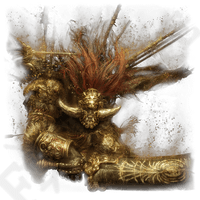
Obtained by defeating Starscourage Radahn
In game description reads:
Remembrance of Starscourge Radahn, hewn into the Erdtree. The power of its namesake can be unlocked by the Finger Reader. Alternatively, it can be used to gain a great bounty of runes. The Red Lion General wielded gravitational powers which he learned in Sellia during his younger days. All so he would never have to abandon his beloved but scrawny steed.
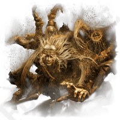
Obtained by defeating Godrick the Grafted
In game description reads:
Remembrance of Godrick, the Grafted, hewn into the Erdtree. The power of its namesake can be unlocked by the Finger Reader. Alternatively, it can be used to gain a great bounty of runes. A feeble man sought power through the grotesque act of grafting. "One day we'll return together, to our home, bathed in rays of gold.
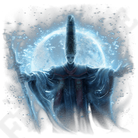
Obtained by defeating Rennala, Queen of the Full Moon
In game description reads:
Remembrance of Rennala, Queen of the Full Moon, hewn into the Erdtree. The power of its namesake can be unlocked by the Finger Reader. Alternatively, it can be used to gain a great bounty of runes. In her youth, Rennala was a prominent champion who charmed the academy with her lunar magic, becoming its master. She also led the Glintstone Knights and established the house of Caria as royalty
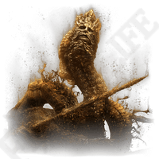
Obtained by defeating Rykard, Lord of Blasphemy
In game escription reads:
Remembrance of Rykard, Lord of Blasphemy, hewn into the Erdtree. The power of its namesake can be unlocked by the Finger Reader. Alternatively, it can be used to gain a great bounty of runes. Rykard took the form of a giant serpent that he might devour, grow, and live eternally. "I understand. The road of blasphemy is long and perilous. One cannot walk it unprepared to sin
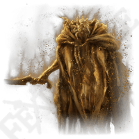
Obtained by deafeating Morgott, the Omen King
In game description reads:
Remembrance of Morgott, the Omen King, hewn into the Erdtree. The power of its namesake can be unlocked by the Finger Reader. Alternatively, it can be used to gain a great bounty of runes. Though born one of the graceless Omen, Morgott took it upon himself to become the Erdtree's protector. He loved not in return, for he was never loved, but nevertheless, love it he did.
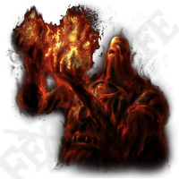
Obtained by deafeating the Fire Giant
In game description reads:
Remembrance of Fire Giant, hewn into the Erdtree. The power of its namesake can be unlocked by the Finger Reader. Alternatively, it can be used to gain a great bounty of runes. The Fire Giant is a survivor of the War against the Giants. Upon realizing the flames of their forge would never die, Queen Marika marked him with a curse. "O trifling giant, mayest thou tend thy flame for eternity."
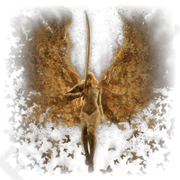
Obtained by deafeating Malenia, Blade of Miquella
In game description reads:
Remembrance of Malenia, Goddess of Rot, hewn into the Erdtree. The power of its namesake can be unlocked by the Finger Reader. Alternatively, it can be used to gain a great bounty of runes. Miquella and Malenia are both the children of a single god. As such they are both Empyreans, but suffered afflictions from birth. One was cursed with eternal childhood, and the other harbored rot within.
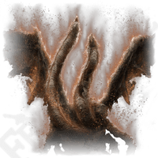
Obtained by deafeating Dragonlord Placidusax
In game description reads:
Remembrance of Dragonlord Placidusax, hewn into the Erdtree. The power of its namesake can be unlocked by the Finger Reader. Alternatively, it can be used to gain a great bounty of runes. The Dragonlord whose seat lies at the heart of the storm beyond time is said to have been Elden Lord in the age before the Erdtree. Once his god was fled, the lord continued to await its return.
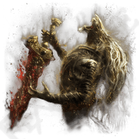
Obtained by deafeating Maliketh, the Black Blade
In game description reads:
Remembrance of Maliketh, the Black Blade, hewn into the Erdtree. The power of its namesake can be unlocked by the Finger Reader. Alternatively, it can be used to gain a great bounty of runes. Maliketh was a shadowbound beast given to his Empyrean. Marika's sole need of her shadow was a vessel to lock away Destined Death. Even then, she betrayed him.
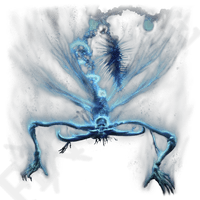
Obtained by deafeating Astel, Naturalborn of the Void
In game description reads:
Remembrance of Astel, Naturalborn of the Void, hewn into the Erdtree. The power of its namesake can be unlocked by the Finger Reader. Alternatively, it can be used to gain a great bounty of runes. A malformed star born in the flightless void far away. Once destroyed an Eternal City and took away their sky. A falling star of ill omen.
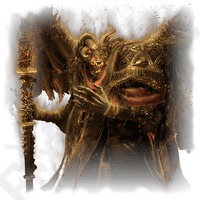
Obtained by deafeating Mohg, Lord of Blood
In game description reads:
Remembrance of Mohg, Lord of Blood, hewn into the Erdtree. The power of its namesake can be unlocked by the Finger Reader. Alternatively, it can be used to gain a great bounty of runes. Wishing to raise Miquella to full godhood, Mohg wished to become his consort, taking the role of monarch. But no matter how much of his bloody bedchamber he tried to share, he received no response from the young Empyrean.
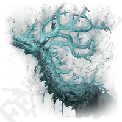
Obtained by deafeating the Regal Ancestor Spirit
In game description reads:
Remembrance of the Regal Ancestor Spirit, hewn into the Erdtree. The power of its namesake can be unlocked by the Finger Reader. Alternatively, it can be used to gain a great bounty of runes. Ancestral spirits exist as a phenomenon beyond the purview of the Erdtree. Life sprouts from death, as it does from birth. Such is the way of the living.
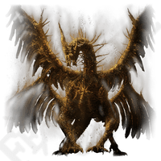
Obtained by deafeating Lichdragon Fortissax
In game description reads:
Remembrance of Lichdragon Fortissax, hewn into the Erdtree. The power of its namesake can be unlocked by the Finger Reader. Alternatively, it can be used to gain a great bounty of runes. After Godwyn the Golden became the Prince of Death, the ancient dragon fought long and hard against the Death within its companion. Alas, victory was never achieved and its only reward was corruption.